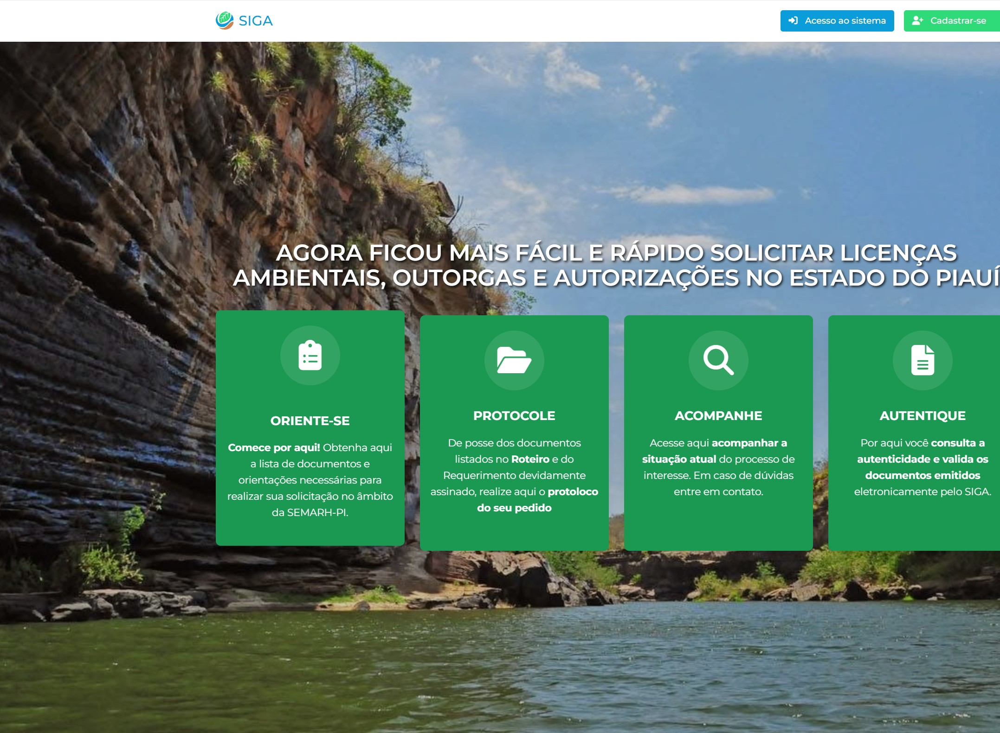
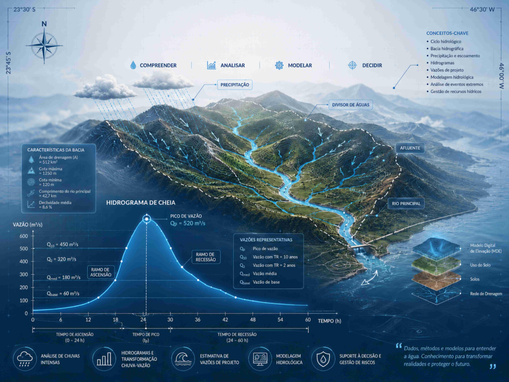
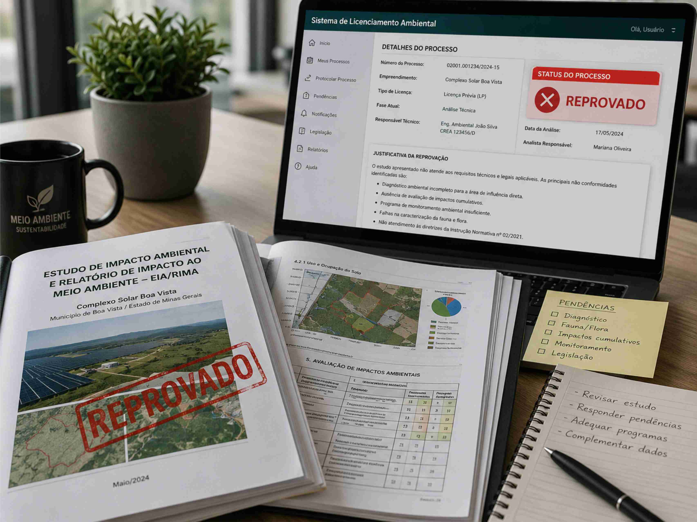
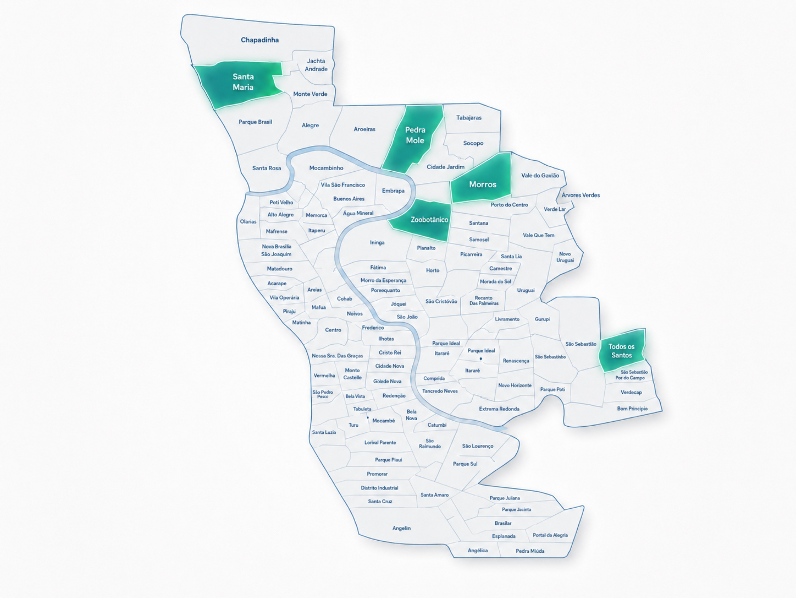
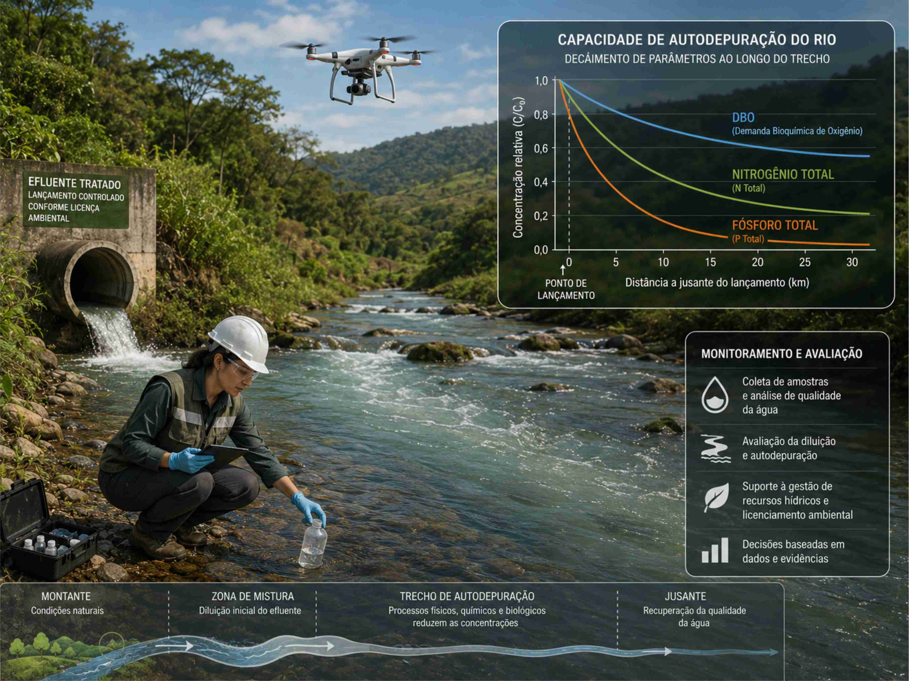
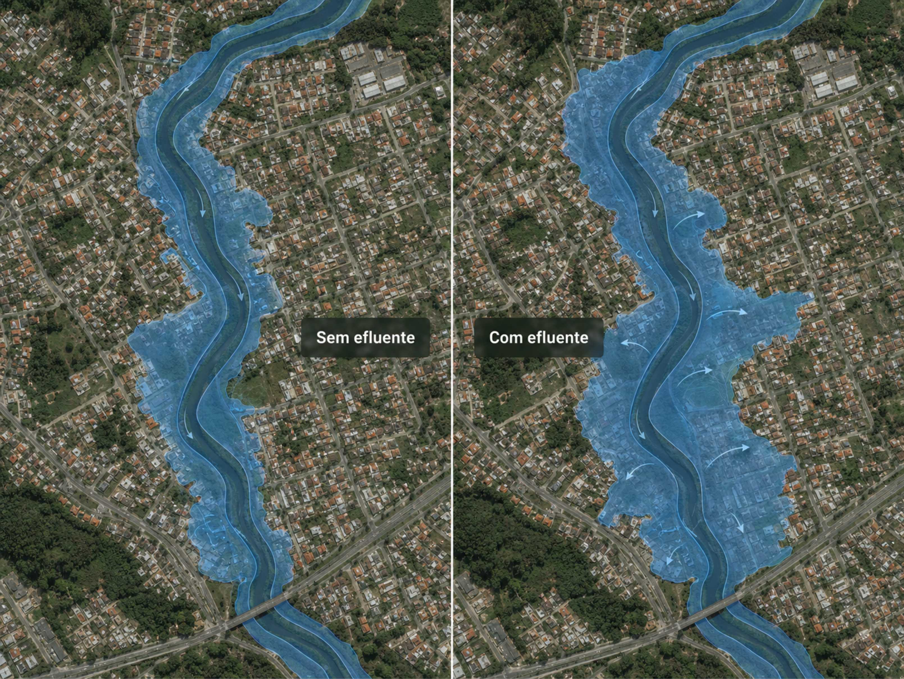
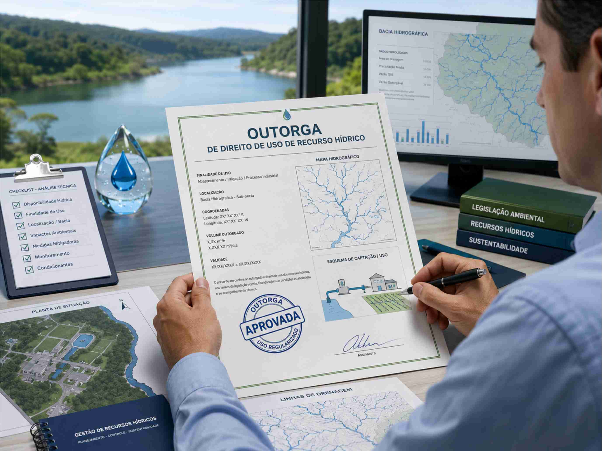

Roteiro do processo de outorga junto à SEMARH/PI
Aprenda a gerar o roteiro automático disponibilizado pela SEMARH/PI para a instrução do processo de Outorga de Direito de Uso de Recurso Hídrico.
Conhecer materialAvaliação de corpos receptores, cenários de lançamento de efluentes, disponibilidade hídrica, capacidade de suporte ambiental e impactos associados ao lançamento proposto.
Clique em cada tópico para conhecer e entender como conduzimos a análise técnica.
Nosso processo de elaboração inclui visita técnica, inspeção de campo, reconhecimento de feições hidrológicas e descrição da dinâmica hídrica da região estudada.
Avaliamos a presença de lagoas, zonas de afloramento, áreas úmidas, talvegues, canais de drenagem, córregos, riachos, rios, dispositivos hidráulicos, pontos de contribuição difusa e interferências urbanas capazes de alterar o comportamento hidrológico local.
Quando necessário, integramos ferramentas de modelagem como HEC-HMS e HEC-RAS, além de rotinas próprias para determinação de vazões de referência, como Q90 e Q7,10, além de outros parâmetros hidrológicos relevantes.
A combinação entre campo, geoprocessamento, modelagem e interpretação técnica permite construir estudos mais consistentes, com premissas claras, resultados rastreáveis e fundamentação adequada para análise pelos órgãos competentes.

Estudos de disponibilidade hídrica e capacidade de autodepuração são documentos técnicos complexos. Eles exigem conhecimento aprofundado da hidrologia regional, da dinâmica dos corpos receptores e dos impactos ambientais associados ao lançamento de efluentes tratados.
A qualidade do estudo depende da correta interpretação do comportamento da bacia hidrográfica, das vazões de referência, da sazonalidade do regime hidrológico, das características do lançamento e da condição ambiental do corpo receptor.
A realização de campanhas de campo é uma etapa crítica. O reconhecimento de feições hídricas, a medição de vazão, o registro fotográfico, a identificação de pontos de lançamento e a coleta de amostras de qualidade da água ajudam a reduzir incertezas e sustentar tecnicamente as conclusões.
A ausência dessas metodologias, ou a sua aplicação inadequada, gera com frequência exigências complementares, questionamentos técnicos e atrasos na avaliação do processo pelo órgão competente.
Por conta disso, o escopo metodológico que desenvolvemos é completo e coerente com as técnicas mais atualizadas de monitoramento e simulação hidrológica, garantindo um estudo de alta qualidade que é aprovado sem pendências de ordem técnica.

Nossa equipe técnica, na pessoa do Dr. Guilherme, já participou da elaboração e aprovação de estudos de disponibilidade hídrica e capacidade de autodepuração na cidade de Teresina/PI, em diferentes contextos urbanos, ambientais e hidrológicos.
Esses estudos subsidiaram processos avaliados e aprovados junto à Secretaria Estadual de Meio Ambiente, com aplicação de metodologias hidrológicas, análises de campo, avaliação de corpos receptores e integração com projetos de engenharia sanitária e ambiental.
Essa experiência permite antecipar pontos críticos, organizar melhor os dados técnicos, estruturar memoriais consistentes e reduzir riscos de pendências durante a tramitação do processo.

A modelagem da capacidade de autodepuração avalia como o corpo hídrico receptor responde ao lançamento de efluentes tratados, considerando as condições hidrológicas, a vazão do lançamento, as características do efluente, a qualidade da água existente e os processos naturais de diluição, transporte e degradação da matéria orgânica.
Esse estudo precisa dialogar diretamente com o projeto da estação de tratamento de efluentes, com as premissas de engenharia sanitária, com os parâmetros de eficiência esperados e com os resultados do estudo hidrológico do corpo receptor.
Entre os impactos ambientais avaliados, destacam-se alterações na concentração de oxigênio dissolvido, demanda bioquímica de oxigênio, nutrientes, matéria orgânica, parâmetros físico-químicos e mudanças na qualidade ambiental do trecho receptor.
A gestão ambiental do corpo hídrico deve incorporar técnicas de monitoramento e controle para verificar o desempenho ambiental da estação, acompanhar o comportamento do lançamento e comprovar que o corpo receptor mantém capacidade de suporte compatível com o cenário proposto.

Uma variável frequentemente negligenciada em estudos de lançamento de efluentes é a relação entre a vazão lançada, o regime hidráulico do corpo receptor e a ocorrência de inundações na região de influência do empreendimento.
Por isso, incluímos uma análise complementar voltada à simulação da mancha de inundação, avaliando como o lançamento proposto pode alterar níveis d’água, pontos de extravasamento e áreas sujeitas a alagamento.
Essa análise permite verificar tecnicamente se o lançamento amplia a ocorrência de inundações, especialmente em áreas urbanas sensíveis, regiões com drenagem insuficiente, fundos de vale, margens ocupadas ou trechos com histórico de conflito com a vizinhança.
O resultado contribui para demonstrar, com base técnica, o impacto do lançamento sobre essa variável ambiental e para orientar medidas de controle, adequação de projeto ou monitoramento quando necessário.

Aprofunde temas relacionados à outorga, estudos hidrológicos e condução técnica de processos junto aos órgãos competentes.

Aprenda a gerar o roteiro automático disponibilizado pela SEMARH/PI para a instrução do processo de Outorga de Direito de Uso de Recurso Hídrico.
Conhecer materialConheça como são elaborados os estudos hidrológicos que subsidiam os estudos de disponibilidade hídrica, capacidade de autodepuração, drenagem urbana, outorga e avaliação de corpos receptores.
Conhecer serviço
Conheça nossa assessoria e consultoria técnica especializada. Assumimos, reorganizamos e conduzimos seu processo com estratégia técnica, documentação adequada e acompanhamento das exigências.
Solicitar assessoriaSolicite uma avaliação inicial da sua demanda. Analisamos o escopo, a localização, o corpo receptor, os documentos disponíveis e a melhor estratégia técnica para condução do estudo.
Solicitar orçamento